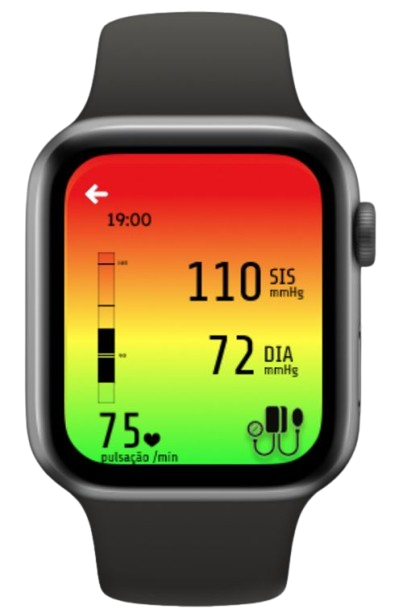

Detalhes do Relógio Inteligente
O relógio SmartPulse foi criado para ajudar no monitoramento da saúde da pessoa, oferecendo suporte em diversas áreas essenciais. Ele auxilia na qualidade do sono, incentiva a ingestão adequada de água, mede a temperatura corporal e monitora os batimentos por minuto (BPM), garantindo assim um cuidado constante e personalizado para quem o utiliza.
As informações coletadas pelo relógio são transmitidas automaticamente para o aplicativo, onde tudo fica registrado e acessível, proporcionando ao usuário uma visão clara e detalhada de sua saúde. Com a inteligência da tecnologia embarcada, o dispositivo realiza um acompanhamento em tempo real e, caso ocorra algo fora do comum – como um aumento súbito dos batimentos cardíacos ou variações na temperatura – o aplicativo envia imediatamente um alerta ao usuário, perguntando se está tudo bem.
Se o alerta não for respondido ou a situação for crítica, o sistema contata os familiares cadastrados para que possam prestar assistência. E, caso isso também não seja suficiente, o relógio aciona automaticamente o sistema de saúde, garantindo que o usuário receba ajuda de forma rápida e eficiente.
Imagens adicionais do Relógio

O relógio foi a parte mais desafiadora do projeto, trazendo diversos problemas e dificuldades. Como o conteúdo sobre Arduino foi abordado apenas no primeiro ano, os integrantes enfrentaram o desafio de comprar componentes, aprender sobre sensores e integrar tudo de forma funcional. Com receio de que o relógio físico não fosse concluído a tempo, decidiram desenvolver também uma versão virtual como alternativa.
Malu criou o relógio virtual no Figma, apresentando um design moderno e atraente. Lucas, por sua vez, desenvolveu um simulador de BPM no Flutter, com um design simples e intuitivo para remeter à funcionalidade de um relógio.
O ESP32 foi escolhido como a unidade central de processamento do relógio inteligente. Esse microcontrolador de alto desempenho, com conectividade integrada via Wi-Fi e Bluetooth, é capaz de processar dados em tempo real, executar algoritmos de IA e gerenciar a comunicação com outras plataformas. Ele é responsável por coletar dados de diversos sensores, como os de frequência cardíaca, movimento e condução da pele. Essas informações são fundamentais para monitorar sinais fisiológicos que possam indicar uma crise de ansiedade ou pânico iminente.
Se uma crise for detectada, o ESP32 pode ativar mecanismos de intervenção, como alertar o usuário, enviar notificações aos contatos de emergência ou se integrar a aplicativos de suporte psicológico. A conectividade Bluetooth e Wi-Fi também permite que o dispositivo se conecte a smartphones e outras plataformas, garantindo um suporte mais abrangente e eficiente.